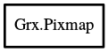

Pixmap
Object Hierarchy:

Description:
[ Compact ]
public class Pixmap
A fill pattern stored in a layout identical to the video RAM for filling using 'bitblt'-s.
It is mode dependent, typically one of the library functions is used to build it.
Content:
Static methods:
- public static Pixmap @new (uint8* pixels, int w, int h, Array<Color>? colors)
Build a pixmap from pixels.
- public static Pixmap new_from_bits (uint8* bits, int w, int h, Color fg, Color bg)
Builds a pixmap fill pattern from bitmap data.
- public static Pixmap new_from_context (Context context)
Converts a graphics context to a pixmap fill pattern.
Methods:
- public Pixmap mirror (PixmapMirrorFlags flags)
Creates a new pixmap, flipping left-right and/or top-bottom as
indicated by flags.
- public Pixmap stretch (int new_width, int new_height)
Creates a new pixmap stretching this
to new_width by new_height.